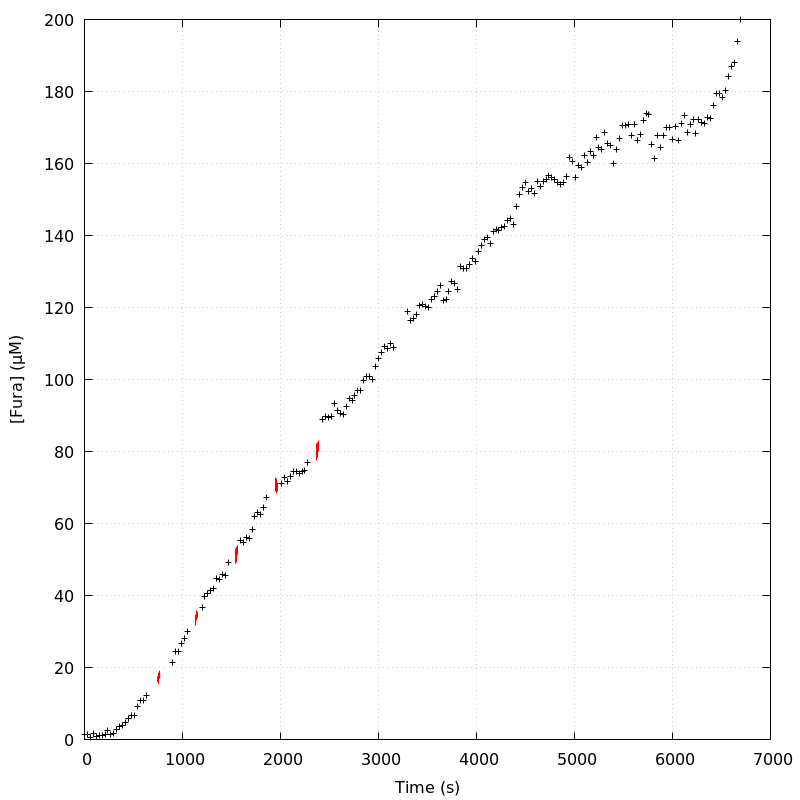
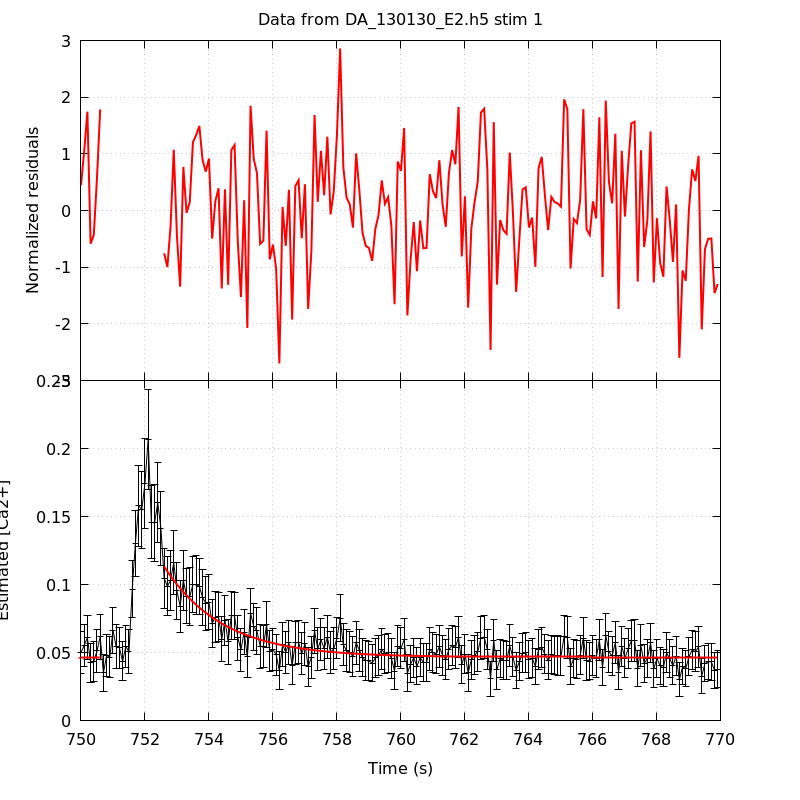
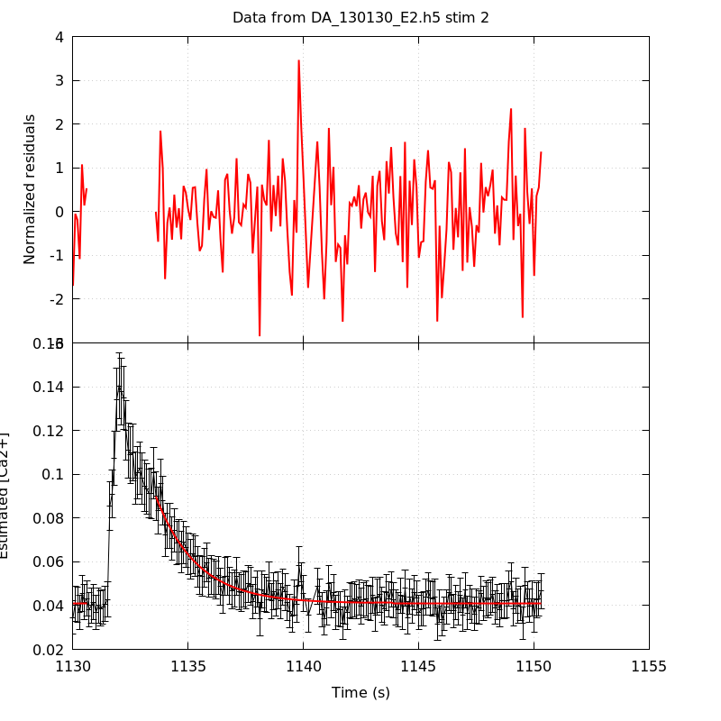
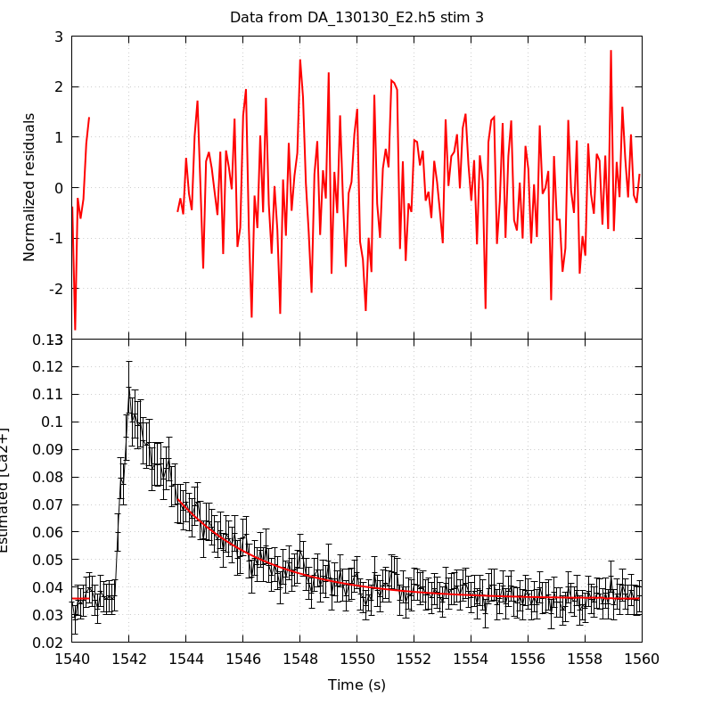
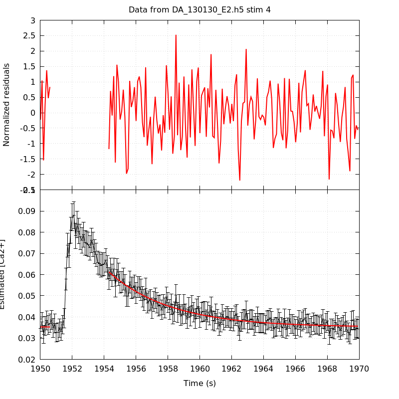
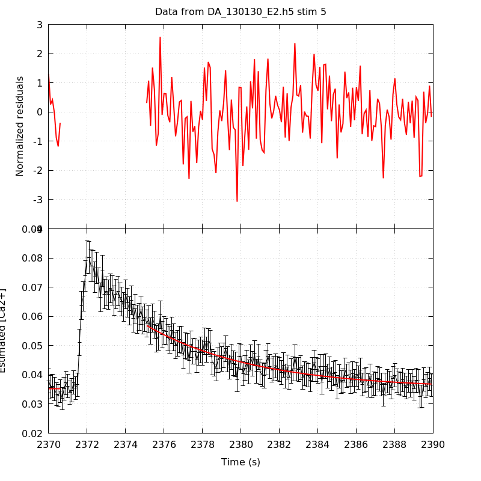
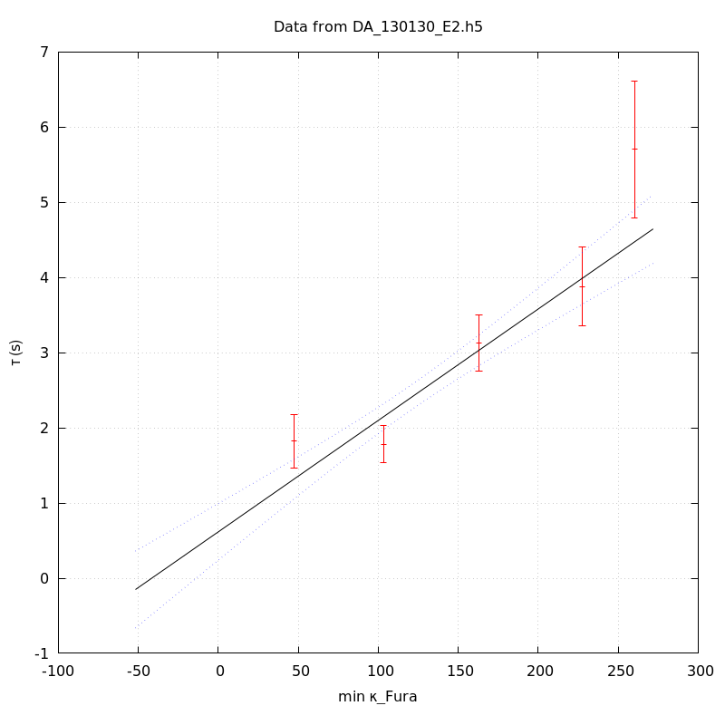
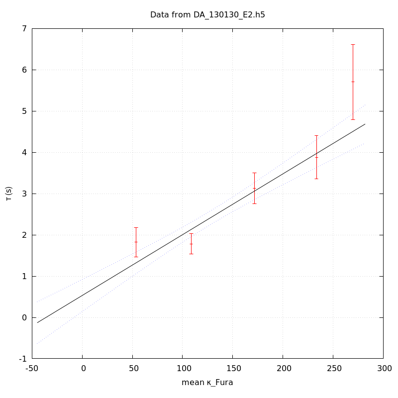
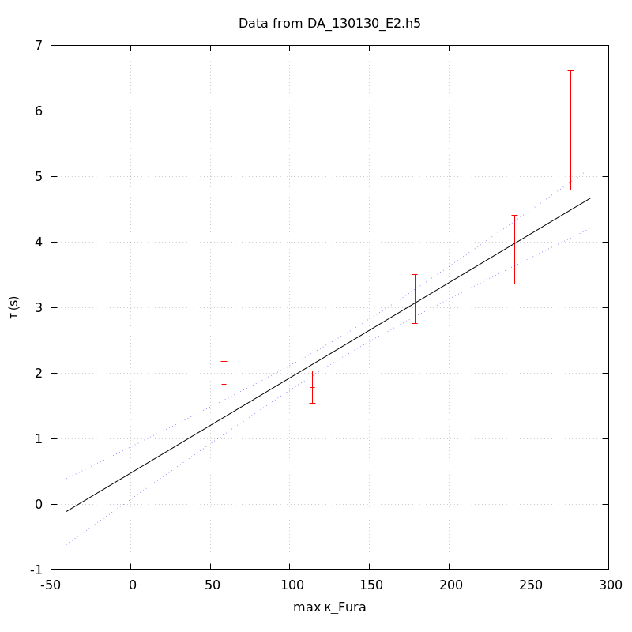

The baseline length is: 7.
When fitting tau against kappa_Fura only the transients for which the fit RSS and the lag 1 auto-correlation of the residuals were small enough, giving an overall probability of false negative of 0.02, were kept (see the numerical summary associated with each transient).
The good transients are: 1, 2, 3, 4, 5.
The time at which the 'good' transients were recorded appear in red.

On each graph, the residuals appear on top. Under the null hypothesis, if the monoexponential fit is correct they should be centered on 0 and have a SD close to 1 (not exactly 1 since parameters were obtained through the fitting procedure form the data.
The estimated [Ca2+] appears on the second row. The estimate is show in black together with pointwise 95% confidence intervals. The fitted curve appears in red. The whole transient is not fitted, only a portion of it is: a portion of the baseline made of 7 points and the decay phase starting at the time where the Delta[Ca2+] has reached 50% of its peak value.
The time appearing on the abscissa is the time from the beginning of the experiment.
Transient 1 is 'good'.

nobs = 181
number of degrees of freedom = 178
baseline length = 7
fit started from point 26
estimated baseline 0.0466352 and standard error 0.000712525
estimated delta 0.0665676 and standard error 0.00469285
estimated tau 1.82178 and standard error 0.179009
residual sum of squares: 189.302
RSS per degree of freedom: 1.06349
Probability of observing a larger of equal RSS per DOF under the null hypothesis: 0.26699
Lag 1 residuals auto-correlation: 0.064
Pr[Lag 1 auto-corr. > 0.064] = 0.169
Transient 2 is 'good'.

nobs = 171
number of degrees of freedom = 168
baseline length = 7
fit started from point 36
estimated baseline 0.0410404 and standard error 0.000402645
estimated delta 0.0488653 and standard error 0.00237676
estimated tau 1.78303 and standard error 0.127275
residual sum of squares: 166.535
RSS per degree of freedom: 0.991279
Probability of observing a larger of equal RSS per DOF under the null hypothesis: 0.517452
Lag 1 residuals auto-correlation: -0.024
Pr[Lag 1 auto-corr. > -0.024] = 0.625
Transient 3 is 'good'.

nobs = 170
number of degrees of freedom = 167
baseline length = 7
fit started from point 37
estimated baseline 0.0357049 and standard error 0.000393404
estimated delta 0.0363293 and standard error 0.00119247
estimated tau 3.12474 and standard error 0.190503
residual sum of squares: 197.353
RSS per degree of freedom: 1.18175
Probability of observing a larger of equal RSS per DOF under the null hypothesis: 0.0541759
Lag 1 residuals auto-correlation: 0.022
Pr[Lag 1 auto-corr. > 0.022] = 0.363
Transient 4 is 'good'.

nobs = 164
number of degrees of freedom = 161
baseline length = 7
fit started from point 43
estimated baseline 0.0351866 and standard error 0.000400354
estimated delta 0.0260399 and standard error 0.000811195
estimated tau 3.88232 and standard error 0.267584
residual sum of squares: 135.459
RSS per degree of freedom: 0.841358
Probability of observing a larger of equal RSS per DOF under the null hypothesis: 0.929056
Lag 1 residuals auto-correlation: -0.047
Pr[Lag 1 auto-corr. > -0.047] = 0.746
Transient 5 is 'good'.

nobs = 156
number of degrees of freedom = 153
baseline length = 7
fit started from point 51
estimated baseline 0.0352163 and standard error 0.000555117
estimated delta 0.0216578 and standard error 0.000678764
estimated tau 5.70377 and standard error 0.462412
residual sum of squares: 152.695
RSS per degree of freedom: 0.998005
Probability of observing a larger of equal RSS per DOF under the null hypothesis: 0.491756
Lag 1 residuals auto-correlation: 0.076
Pr[Lag 1 auto-corr. > 0.076] = 0.161
Since the [Fura] changes during a transient (and it can change a lot during the early transients), the unique value to use as '[Fura]' is not obvious. We therefore perform 3 fits: one using the minimal value, one using the mean and one using the maximal value.
The observed tau (shown in red) are displayed with a 95% confidence interval that results from the fitting procedure and is therefore meaningful only if the fit is correct!
No serious attempt at quantifying the precision of [Fura] and therefore kappa_Fura has been made since the choice of which [Fura] to use has a larger effect and since the other dominating effect is often the certainty we can have that the saturating value (the [Fura] in the pipette) has been reached.
The straight line in black is the result of a weighted linear regression. The blue dotted lines correspond to the limits of pointwise 95% confidence intervals.

Best fit: tau = 0.617255 + 0.0148229 kappa_Fura
Covariance matrix:
[ +3.69762e-02, -2.47695e-04
-2.47695e-04, +2.05958e-06 ]
Total sum of squares (TSS) = 130.139
chisq (Residual sum of squares, RSS) = 23.4572
Probability of observing a larger of equal RSS per DOF under the null hypothesis: 3.24242e-05
R squared (1-RSS/TSS) = 0.819753
Estimated gamma/v with standard error: 67.463 +/- 6.53162
Estimates kappa_S with standard error (using error propagation): 40.6419 +/- 13.5847
kappa_S confidence intervals based on parametric bootstrap
0.95 CI for kappa_S: [12.6114,80.6762]
0.99 CI for kappa_S: [4.62632,96.9799]

Best fit: tau = 0.531881 + 0.0147365 kappa_Fura
Covariance matrix:
[ +3.95210e-02, -2.55072e-04
-2.55072e-04, +2.01218e-06 ]
Total sum of squares (TSS) = 130.139
chisq (Residual sum of squares, RSS) = 22.2141
Probability of observing a larger of equal RSS per DOF under the null hypothesis: 5.88712e-05
R squared (1-RSS/TSS) = 0.829305
Estimated gamma/v with standard error: 67.8587 +/- 6.53197
Estimates kappa_S with standard error (using error propagation): 35.0927 +/- 13.9304
kappa_S confidence intervals based on parametric bootstrap
0.95 CI for kappa_S: [7.10193,75.2667]
0.99 CI for kappa_S: [0.539659,93.8298]

Best fit: tau = 0.471682 + 0.0145441 kappa_Fura
Covariance matrix:
[ +4.16516e-02, -2.59953e-04
-2.59953e-04, +1.96073e-06 ]
Total sum of squares (TSS) = 130.139
chisq (Residual sum of squares, RSS) = 22.2549
Probability of observing a larger of equal RSS per DOF under the null hypothesis: 5.77309e-05
R squared (1-RSS/TSS) = 0.828991
Estimated gamma/v with standard error: 68.7563 +/- 6.61963
Estimates kappa_S with standard error (using error propagation): 31.4311 +/- 14.3755
kappa_S confidence intervals based on parametric bootstrap
0.95 CI for kappa_S: [2.90292,70.3198]
0.99 CI for kappa_S: [-4.46584,86.846]
5 out of 5 transients were kept.
sigma(tau): 0.179009, 0.127275, 0.190503, 0.267584, 0.462412
Residual correlation at lag 1: 0.06371842301776723, -0.02424765164508734, 0.022126796742796728, -0.04749938836759481, 0.07639986484693485
Probablity of a correlation at lag 1 smaller or equal than observed: 0.16900000000000004, 0.625, 0.363, 0.746, 0.16100000000000003
RSS/DOF: 1.06349, 0.991279, 1.18175, 0.841358, 0.998005